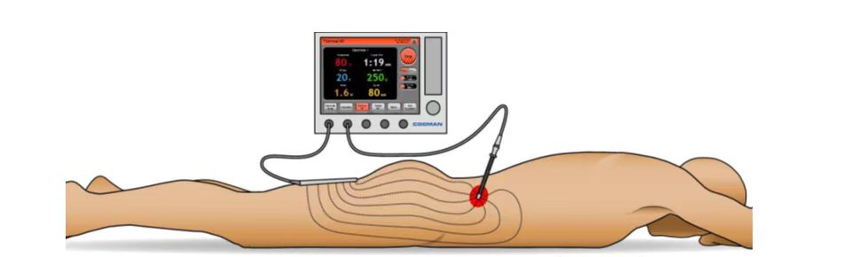

大连医科大学附属第一医院
金普院区 · 疼痛科病房
周围神经脉冲射频术
术后须知
周围神经脉冲射频术是一种通过调节神经功能来止痛的微创治疗。由于它并非毁损神经，术后通常没有严重的后遗症，恢复也较快。但为了确保效果和安全，术后有一些细节需要您特别留意。

🛏️ 术后当天：留观与休息
院内留观：
术后需要在医院观察1-2小时，无特殊不适即可离院。
避免驾驶：
如果术中使用了镇静药物，术后24小时内请
绝对不要驾车、饮酒或签署重要文件
。
正常饮食：
返回病房或回家后，如无恶心等不适，即可恢复正常饮食。
🩹 穿刺点护理：保持干燥
敷料处理：
穿刺点仅有一个针眼大小。贴在上面的无菌敷料，通常24小时后可以自行取下。
防水与淋浴：
24小时内保持注射部位清洁干燥、
避免进水
。
观察异常：
注意观察穿刺点有无红肿、渗液、异常疼痛或发热等情况。
😣 疼痛管理：可能会暂时加重
疼痛“反跳”现象：
术后几天甚至几周内，原来的疼痛处可能会出现
暂时性加重
，这是正常现象，并不代表治疗失败。
如何应对：
如果疼痛影响休息，可以按医嘱服用常规止痛药（如对乙酰氨基酚或布洛芬）。
🚶 活动与康复：循序渐进
何时能活动：
• 一般术后平卧休息2小时后即可下地行走。
• 术后第2天即可恢复大部分日常活动。
• 建议在72小时后再恢复游泳、健身等体育锻炼。
康复建议：
建议保持适度活动，进行一些
轻柔的拉伸
，这有助于康复。
💊 药物与饮食
遵医嘱服药：
医生可能会开一些营养神经（如甲钴胺）或消炎镇痛的药物，请按时按量服用。
正常饮食：
恢复正常饮食即可，
无需特殊忌口
。
⚠️ 需要警惕的信号（及时就医）
如果出现以下任何一种情况，请立即联系医院或前往最近的急诊科：
穿刺点有
黄色分泌物、异常红、肿、热、痛
。
出现
发烧
（体温升高）。
剧烈头痛
或穿刺部位无法忍受的剧痛。
感到恶心、呕吐或其他严重不适。
（针对腰、腿部治疗者）
腿部出现严重或逐渐加重的
无力、麻木
。
📅 效果与随访
起效时间：
脉冲射频的止痛效果并非立竿见影，通常需要
3-4周甚至6-8周
才能达到最佳效果。
效果时长：
效果持续时间因人而异，可能从6个月到数年不等。如果疼痛复发，可以重复进行治疗。
定期随访：
请遵照医嘱，按时返回医院复查。